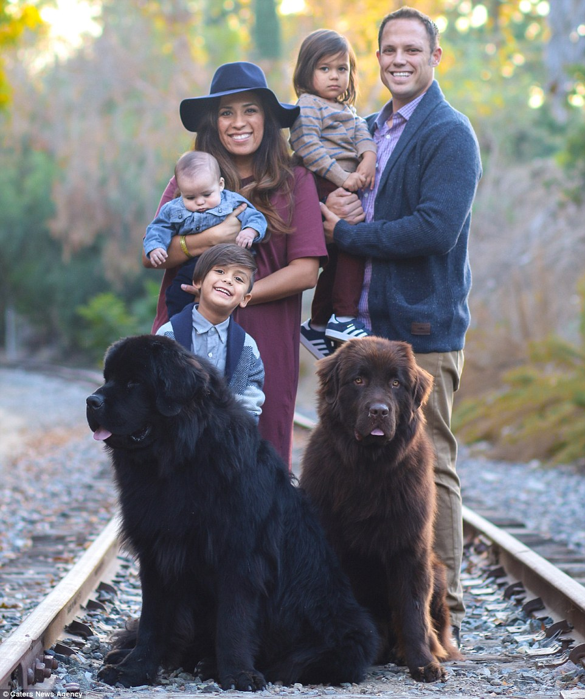
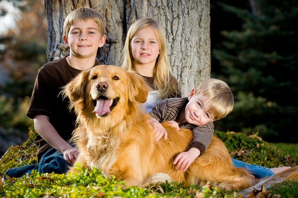

Dogs are the best pets
Picture from https://www.123rf.com/photo_86365339_beautiful-happy-family-is-having-fun-with-golden-retriever-outdoors-mother-father-and-daughter-are-l.html/
5. Bulldogs
Picture from http://voguesugar.com/baby-sleeping-with-french-bulldog-puppies/baby-sleeping-with-french-bulldog-9/
The common misconception of the english bulldog is that they are viscous; however, they are actually really friendly unless trained otherwise. In fact, the English bulldog is actually a great family dog and they are friednly with children.
4. Bernese Mountain Dog
Picture from https://www.petcha.com/8-signs-your-bernese-mountain-dog-just-wants-to-be-part-of-the-family/
Bernese Mountain Dogs are great family dogs. They are sweet, affectionate, patient if you have a small child climbing on them, and are friendly to strangers and their dogs. Be aware though that they think they are lap dogs.
3. Newfoundlands
picture from https://www.dailymail.co.uk/femail/article-3517108/How-family-s-three-children-best-buddies-two-giant-Newfoundlands.html
Newfoundlands are quite big dogs, the average female weighs 99-120lbs and the average male weighs between 130-150lbs. Although I wouldn't let their size decieve you, they can be considered as the epitomy of a social dog and are extremly loyal dogs who are also being very affectionate.
2. Australian Labradoodle
Picture from http://www.ashfordmanorlabradoodles.com/a-summer-puppy/
The Australian labradoodle is one of the sweetest dogs. They love everyone and are super loyal to the owners.
1. Golden Retriever
Picture from http://allpetnews.com/10-best-dog-breeds-for-families/golden-retriever-family-dog
Last, but not least the Golden Retreiver. They are the absolute epitomy of a family dog; they are friendly, trustworthy, reliable, and kind to all. Their loving affection makes them so enjoyable to be around and their high intellegence can make them fun to watch.
My contract